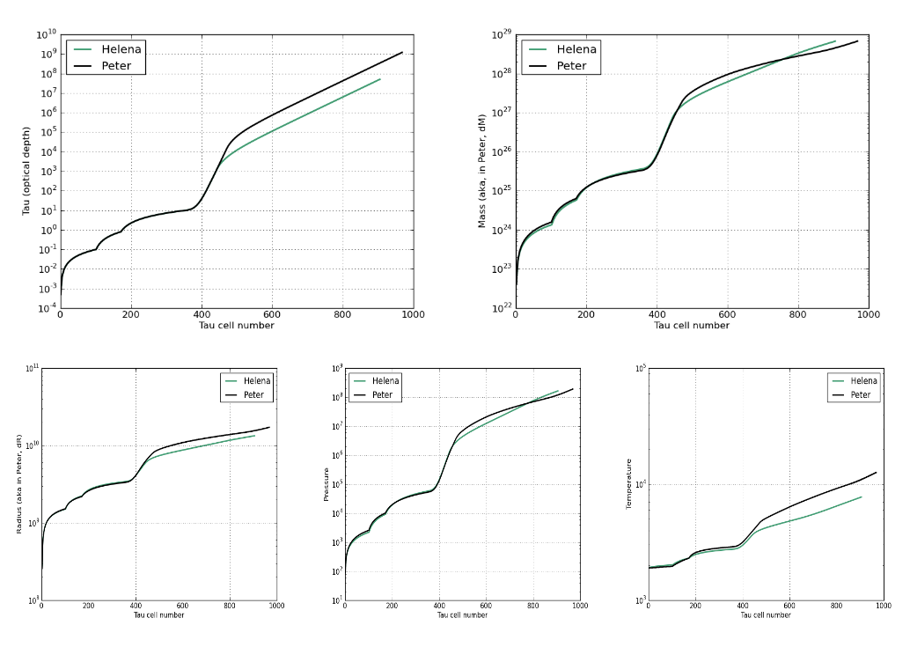
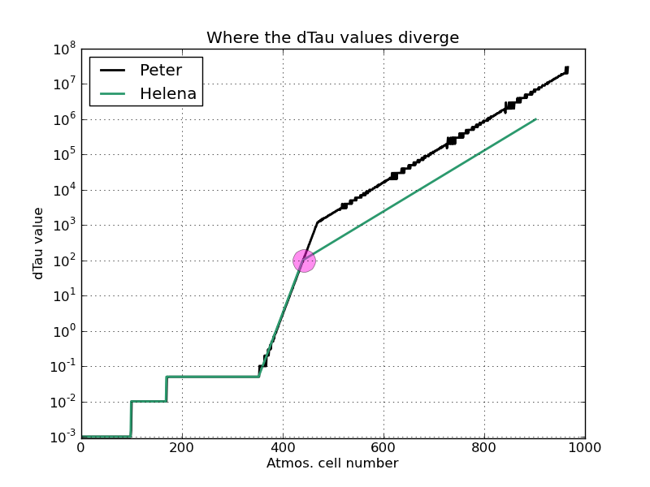
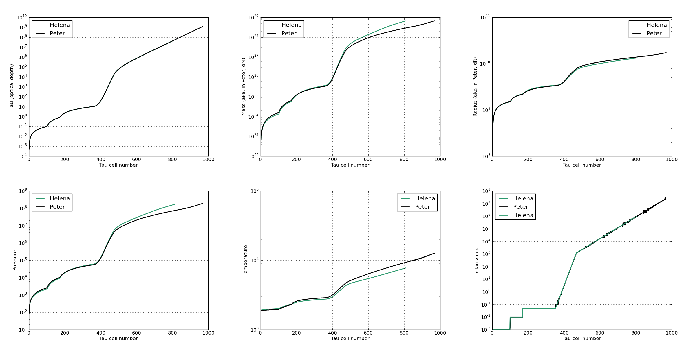

Date & Time: Oct. 9, 2012
Location: campus
Computing context: MachoMac
(/Desktop/Research/CppHenyeyCode/src, /Desktop/Research/BodenheimerCode/UnalteredCode)
From last time:
...I'm pretty sure this boils down to how the outermost G values are calculated, which in turn depends on how the atmospheric P/T/R/rho values are getting calculated. Debugging my atmos subroutine is probably going to be a long, involved, gnarly process that will drag on for about another month.
Still to do:
Still need to fix the problem w/ the G values disagreeing at the outermost boundary
Check/ compare the T/P/Ratm values that Peter adn Helena are generating
are the inputs to the atmos subroutine the same every time it's called (same b/w the codes, not b/w the calls)?
Is it something buggy w/in the atmos subroutine, or is the bug in the inputs that are being supplied to the atmos subroutine?
Also need to re-test that the dTime value/difference was causing the differences b/w the dX profiles for the 1Msun, n=3/2 polytrope test case!
Run both codes on both test cases for many iterations, but w/ dTime=0, to see how and if they converge, and to check whether they converge to the same solutions
Run both codes for 1 iteration w/ dTime >0
Run both codes for several iterations, for one timestep, with dTime > 0
Run both codes for several timesteps
Run both codes for 1 timestep, w/ a range of dTime values, to see whether/how the codes' results disagree for very small or large timesteps
Pick up where I left off last time with the P/R/Tatm debugging.
The atmos values that I got/called from Peter's code-- were those at the 0th (outermost) point of the atmosphere? Or the innermost point? Check this, first, because it looks like the P/T/Ratm values Peter's code returned were basically the same as the P/T/Rjmax values that were fed to it.
From Peter's code, at the outer boundary:
G1 = -409.950708925724
Pouter = 166993483.387042 Patm = 166993893.337751
G2 = -42716.9422760010
X(J2,2) = 87542104809.4471 X(J1,2) = 72506027832.4280 Ratm = 15036119693.9613
G3 = 0.00000000000000
X(J2,3) = 1.402235808868283E+032 X(J1,3) = 1.402235808868283E+032
G4 = -3.284887504560174E-002
X(J2,4) = 12161.1609923647 Tatm = 12161.1938412397
To Do Today:
Let's start by plotting/comparing the Helena and Peter atmos values:
tau/optical depth
dM
dtau
tau vs. T
tau vs. P
tau vs. R
tau vs. M
It looks like the atmospheric calculations b/w the two codes start differing around tau cell number 500. (See Figure 1 below).

Comparison of the
atmospheric calculations in Peter and Helena, for the 10 Mjup, no
fusion input model after 0 Henyey iterations. Notice how the two
codes' results begin to diverge around the 500th tau cell in the
atmosphere. (Tau cell = 0 is the very outer surface of the star.
Highest tau cell number = inner edge of the atmos, right next to the
outer edge of the inner model that's being evolved via the Henyey
algorithm.)
Figure
1:
Maybe the difference that crops up around the 500th tau cell has to do with how the dTau values are calculated once tau exceeds a certain value in each of the codes. Might debug this by comparing the dTau values calculated by the two codes at each step? Use a python script to get this from the existing read-in atmos info.
Created 'compare_atmos_calcs.py' to perform those calcs. See results in Figure 2.

The dTau values
generated by Helena's and Peter's atmos subroutines start differing
around the 442nd atmospheric cell, as marked by the pink circle on
the diagram.
Figure
2
The dTau values start differing around the same place that all the rest of the calculated atmospheric values start disagreeing with each other b/w the two codes. This is at the ~442nd atmospheric cell. This looks like the place where the dTau values first exceed 100.0. The tau values at this point are around ~1000.0, or slightly higher. From that point on, Helena's dTau values are consistently ~10x smaller than Peter's.
This divergence point comes *after* tau >= 10.0, which is where that strange set of conditions on calculating the next dTau value sets in within Peter's code. I wonder what's special about this divergence point?
Maybe it's something to do with the 'dtauMX' value referenced in that strange portion of his code? Let's check this: run Peter's code and just have it print out what that 'dtauMX' value is for the 10 Mjup, no fusion case...
From Peter's code, for this run, we have:
dTAUmx = 1200.83880890685
Hmm, that's reasonably close to the tau (note: NOT dTau) value at which the two codes' results start disagreeing.
Changed that parameter (which is hard-coded into Helena's atmos subroutine, and had been set to 100.0 until now) to 1.2e3, re-run, and let's see what comes of it.
Results shown in Figure 3, below. The tau and dTau values now agree throughout the atmospheres, although the Helena atmosphere still contains fewer cells than Peter's does, which confuses me-- how do you get the dTau and tau profiles to line up if one code has ~200 fewer tau cells than the other one?
The innermost pressure and mass values appear to agree well. The innermost radius values slightly disagree, and the innermost temperature values disagree significantly (factor of ~2, which is enough to throw off all the calculations downwind of the outermost G4J value).

Results from the atmos
calculations, with dTauMX set to the same value in Peter and Helena
(1200.00), for the 10 Mjup, no fusion run.
Figure
3:
Check how the temperature profiles in Helena changed before and after making that dTauMX adjustment. <-- Yeah, doesn't seem to have changed at all, unlike all of the other profiles/variables.
Since the temperature profiles were not brought into agreement (or maybe even changed at all??) from the dTauMX value change, let's examine just the calculations involving the temperature within Helena's atmos subroutine. What variables or values are unique to those calculations?
--> The 'nab' variable is unique to those calculations. It represents the smaller of the radiative and adiabatic gradients. This was something I'd noticed was off a bit before in the atmos calculations b/w the two codes. His code also calculates the conductive gradient, which might start playing an important role? Or something? Deep in the atmosphere? But not anywhere within the body of the model? (Yeah, actually, that line of reasoning makes me think that it's not the conductive gradient that's the main culprit for this mis-match in the atmospheric temperature profiles.)
Also, why am I calculating that nab variable twice in my code? Doesn't my var.update function calculate that automatically? Look into this, because that could be a potential source for error.
Since Peter's code calculates a higher Touter value than Helena does, I also wonder whether adjusting the ATMAX and ATMIN input parameters to his code might allow his atmos calculations to create a 'cooler' inner-atmosphere. Let's check that out.
--> Those parameters seem to control whether or not extra mass cells get added at the outer edge of the model/lower edge of the atmosphere. They don't seem to show up in Peter's atmos subroutine itself, so they probably aren't responsible for the temperature profile difference.
Let's take a step back from all this atmospheric subroutine debugging business.
The real question here is: will matching Helena's T/P/Ratmos values to Peter's cause their respective dX profiles to match up?
The T/P/Ratmos values are only important in calculating the outermost G values (and their derivatives). So, at one degree of remove, the question is: will matching Helena's outermost G values to Peter's cause their respective dX profiles to match up?
Let's try testing that second proposition out, before getting any deeper into this atmospheric debugging stuff.
--> From a
preliminary run-through with compare_dX_walkthrough.py, neither
setting Helena's outermost G values, or both its outermost G and D
values to their Peter counterparts fixes the problem. In fact, it
flattens all of Helena's dX profiles out to zero. Doing the usual
thing of setting Helena's outermost A values equal to their Peter
counterparts, however, fixes the problem just fine.
I wonder if just
setting the outermost G4 values equal to each other would fix it.
Actually, I forgot that the Peter-D values in that script need to be transposed when they're put into the Helena values. When I corrected that mistake, setting the outermost G and D values to the ones from Peter's code does get all of the dX profiles to match up exactly.
When I set only the outermost D values to their Peter-values, the dX profiles agree better than w/ no modifications, and still have the same signs b/w codes.
When I set only the outermost G values to their Peter-values, that problem with the dT profile remains (outermost dT value in Helena = negative, while outermost dT value in Peter = positive).
--> Point being, you can't just fix the P/T/Ratm values. You have to get them to vary correctly with respect to P/R/L/T in order for the dX profiles to come out right.
However, when I go thru with the outermost G values set to the Peter values, and vary which elements of Helena's outermost D matrix get set to their Peter counterparts either one-by-one, row-by-row, or column-by-column, I can never get the resulting dX profiles to agree. Don't think I ever even get them all on the same side of zero, either (i.e., positive vs. negative dX profiles as compared b/w codes.)
This is really puzzling, because I'd think that just one of the outermost G values (and hence, only one of the rows or columns of the associated D matrix) would be responsible for the mismatch b/w the profiles.
What if I try setting rows and cols of the outermost Helena-D that involve P or T (so, 0 and 3) equal to their Peter counterparts and see if that fixes things? Since the Patm and Tatm values are the ones most effected by whatever bug might be in my atmos subroutine.
--> Yes, that fixes it. Though that only narrows it down to half of the values in that outermost D matrix.
--> For next time, what will be the best way for me to test not only what P/T/Ratm values Peter's code is calculating, but how they vary with Pouter and Touter, and how that differs from whatever Helena's doing on that front?
It will definitely involve writing another Python script, and modifying Peter's code to output variables and capturing them somehow and probably some fiddly formatting of that captured output, and...